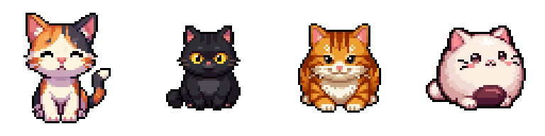
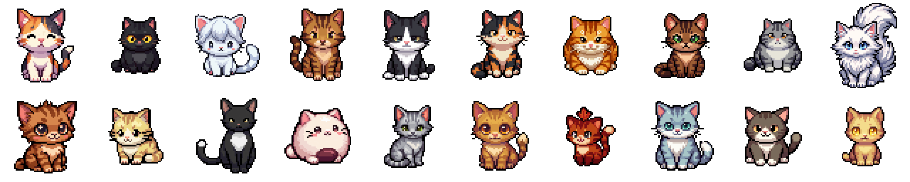

歩数を煮干しに換算して、庭に餌を置くだけ。しばらくしてアプリを開くと、猫が遊びに来ています。外を歩けば、その場所にしかいない猫に会えることも。猫は歩いた報酬です。

庭に来た猫たち。
What you do
歩いて、餌を置いて、帰ってきて開くだけ。説明画面はありません。
100 歩で煮干しが 1 つ、1,000 歩ごとに拾いものの抽選が 1 回。歩数は「ヘルスケア」と端末の歩数計の両方から読み、大きい方を採用します。
庭に餌を置いてアプリを閉じ、しばらくしてから開くと「おかえり」で歩数・拾いもの・来た猫がまとめてわかります。30 分の訪問枠ごとに判定されます。
「おさんぽ」を始めている間だけ、通った道が地図のセルとして塗られます。場所限定の猫が住むセルに入ると出会えることも。
20 匹の図鑑と完成度、そして今日来た猫・歩数・見つけた場所の数をまとめた共有カードを画像として書き出せます。
The Cats
歩くだけで会える子も、決まった場所でしか会えない子もいます。

Privacy
てくてくねこは、サーバーを持ちません。開発者があなたのデータを受け取ることはありません。